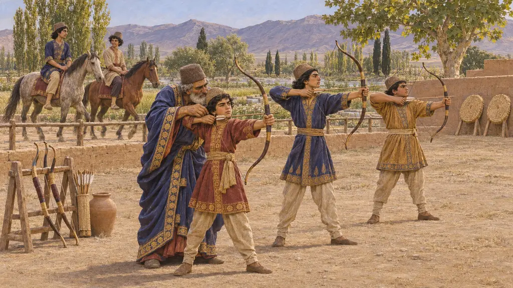
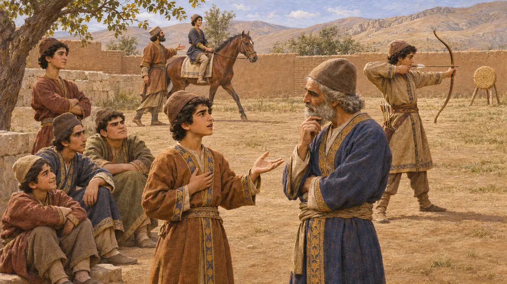
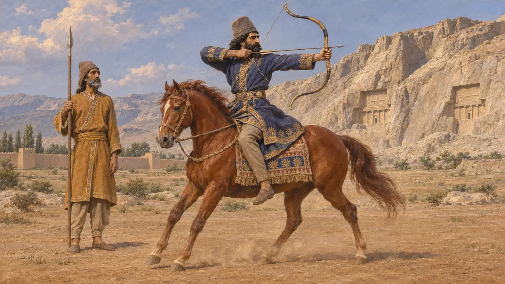
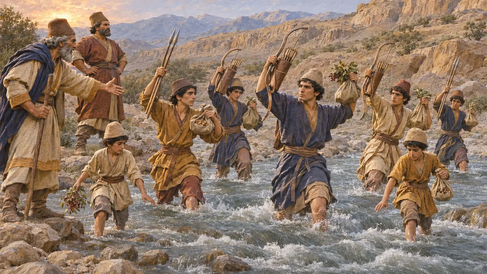
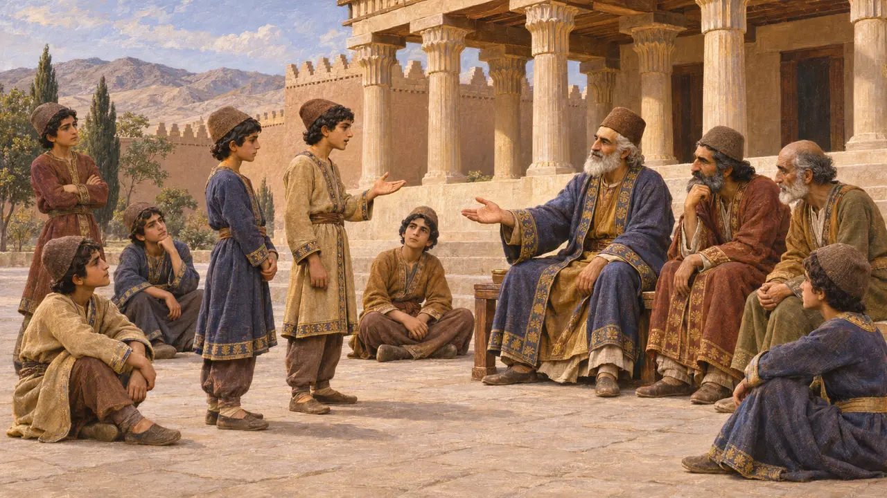
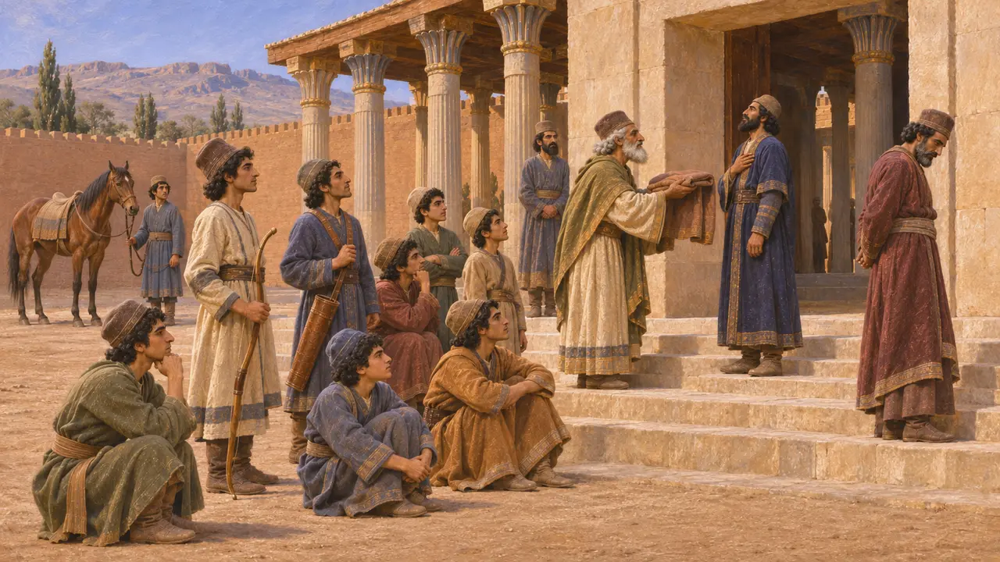
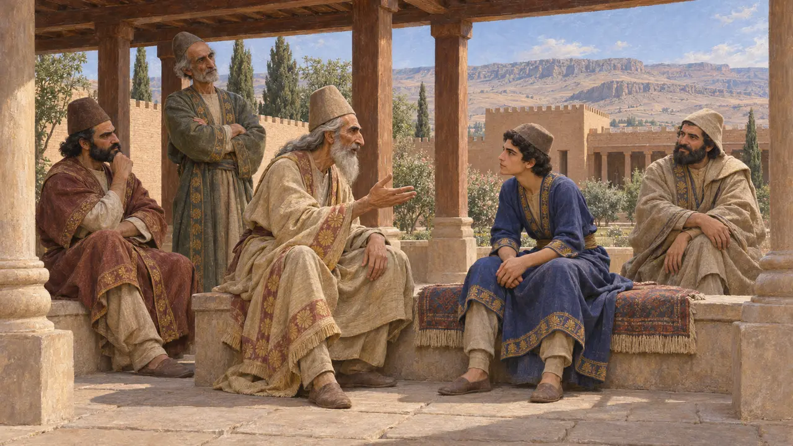

Youths' Training Ground
The upbringing of Persian boys in Greek accounts, 5th-4th centuries BCE, and later
في اللعبة: المستوى 1: ضريح المؤسس
Greek writers describe Persian boys trained from childhood to ride, to shoot and to tell the truth, and Darius himself boasts of those skills. No Persian text describes the schooling and no training ground has been found, so the picture comes from outsiders, and some of it is idealized.
في اللعبة: The Youths' Training Ground sends an instructor along the streets, and Noble Residences need his visits. A Sanctuary with a Teaching Porch serves too, its magus teaching as he walks. The building, the rounds and the porch are the game's inventions: the sources give the lessons, not the place.

Three lessons
رواية قديمةHerodotus says Persian boys were taught three things only, from five years old to twenty: to ride, to shoot the bow and to speak the truth. Before five a boy lived among the women and did not come into his father's sight, so that if he died young his father would not grieve.
Herodotus 1.136

In Darius's own words
في السجلاتThe one Persian voice on these skills is the King's. In his tomb inscription at Naqsh-e Rostam Darius says he is a good horseman, a good bowman and a good spearman, on foot and on horseback, and at Behistun he sets himself against the Lie. It is royal self-praise and says nothing of how a boy was taught, but Herodotus's lessons match it closely.
DNb; DB

Strabo's longer course
رواية قديمةStrabo, writing about five centuries after Darius, has the training run from five to twenty-four: the bow, the javelin, riding and truth, under chosen teachers who weave in tales of gods and noble men. The boys are roused before dawn, run in companies, cross torrents keeping their gear dry, and live off what they gather. He does not call the teachers magi.
Strabo 15.3.18

Xenophon's school of justice
أسطورة لاحقةXenophon has boys go to school to learn justice as Greek boys learn letters, in a free square by the palace kept clear of traders, with elders judging their quarrels. The Cyropaedia is a moral romance about an ideal Persia, written for Greeks, and cannot be taken as a description of one.
Xenophon, Cyropaedia 1.2.3-6

Boys at the King's door
رواية قديمةXenophon knew Persians at first hand, and in the Anabasis he says Persian nobles' sons were brought up at the King's door, where they saw who was honoured and who disgraced, and learned to rule and obey. He says Cyrus the Younger excelled among them at riding and the bow. This is a eulogy, but of a man the writer served.
Xenophon, Anabasis 1.9.3-5

Magi as teachers
متنازع عليهA dialogue passed down under Plato's name, its authorship doubted, says a Persian prince at fourteen went to four royal tutors, the first of whom taught him the magian lore of Zoroaster, which is the worship of the gods, and what belongs to a king. That is a Greek's account of princes, not townsfolk. Nothing else ties the magi to teaching, and the Teaching Porch stands on this alone.
Plato, Alcibiades I 121e-122a
المصادر
- Herodotus 1.136
- DNb
- DB
- Strabo 15.3.18
- Xenophon, Cyropaedia 1.2.3-6
- Xenophon, Anabasis 1.9.3-5
- Plato, Alcibiades I 121e-122a